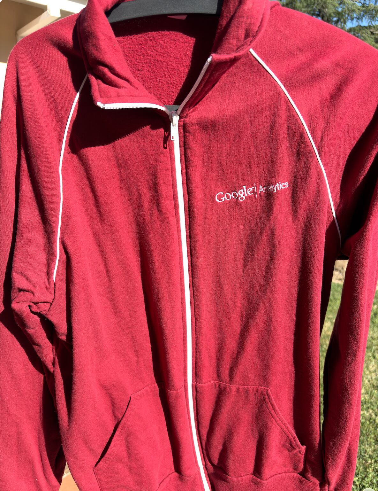

About
Ashish Vij is a data-driven measurement and revenue leader. In 2005 he joined the team that launched Google Analytics; twenty years later he's still helping organizations turn emerging technology into compounding business outcomes.
Today Ashish leads Business Strategy & Marketing at Seer Interactive, where he runs the new business function and champions a measurement-first approach to growth. He partners with marketing and revenue teams to turn analytics — and now AI — from optional capability into the foundation of every decision.
Experience
-
2024 — present
VP, Business Strategy & Marketing · Head of New Business
Seer Interactive
Leads business development and marketing strategy at the SF Bay-Area digital consultancy. Champions a measurement-first approach that helps clients unlock growth through data — not guesswork.
-
2005 — 2019
14 years at Google
Google · Mountain View & Bay Area
Core launch teams for Google Analytics and Google Analytics 360. Later roles included Senior Account Executive on Google Marketing Platform and Partner Manager on Stadia. Partnered with Google's largest advertisers to build advanced measurement strategies that connected media investments to real business outcomes.
Source: LinkedIn experience history; Marketing Analytics Summit speaker bio; RocketReach.

The original Google Analytics track jacket — circa 2005.
The thesis
"AI in 2026 is Analytics in 2005. Same adoption curve. Same job. Someone has to be the person in the room who makes it real."
Ashish's working theory: every wave of emerging tech eventually clears the same adoption bottleneck. The companies that get it right aren't the ones with the fanciest tools — they're the ones with someone patient enough to sit with each team and say "here's how this changes your Tuesday."
He's not just writing about it. He uses Claude daily — for calendar scheduling on the run, and for building interactive sales-to-CS handoff briefs from call transcripts, email, and Drive. Practical AI, repeatable patterns, no hype.
Expertise
Measurement & Revenue Analytics
Twenty years connecting media and product investments to business outcomes — the career thesis.
Enterprise GTM
Two decades selling emerging tech to large advertisers. Carries both sales and customer-success reps.
AI Adoption & Change Management
Google-certified across Gemini for Workspace, Generative AI Fundamentals, LLMs, and Responsible AI.
Sales-to-CS Handoff Design
Builds Claude-powered interactive kickoff briefs from call transcripts, email, and Drive — role-based views so every team gets its lens.
Marketing Strategy & Storytelling
Narrative-first marketer; writes on Substack; speaks at industry conferences including the Marketing Analytics Summit.
The Xoogler Network
Deep bench of ex-Google product, sales, and CS leaders across the Bay Area and beyond.
Speaking & Writing
- Marketing Analytics Summit 2025 — Speaker
- Substack — Writes on measurement, GTM, and the practical edge of AI adoption
- LinkedIn — Active essayist on AI-as-a-daily-tool, sales-CS handoffs, and CES robotics
Phantom-built · AI-powered · 10 questions
How well do you actually know Ashish?
Ten questions. Multiple choice. A Phantom-judged verdict at the end. The receipts come from his own site, RocketReach, and the Marketing Analytics Summit speaker bio — no curveballs, just attention to detail.
Get in touch
The best way to reach Ashish is on LinkedIn — he writes back.
Languages: English (native) · Hindi (elementary) · Spanish (limited working)